2110E20 REAR DRIVE IDLER CASING REMOVED - DISMANTLING AND REASSEMBLY
- Path
- Procedures > 21 GEARBOX UNIT > 2110 MANUAL GEARBOX WITH DIFFERENTIAL > 2110E TRANSFER CASE FOR REAR TRACTION > 2110E20 REAR DRIVE IDLER CASING REMOVED - DISMANTLING AND REASSEMBLY
- Kind
- repair procedure (removal / refitting; the operation number is the code)
- Applies to
- engines: 3.2 JTS; all production periods
- Interactive page
- https://sloeber94.github.io/elrnDB-aBrrSpdr/en/#/946002073
Applies to: engines: 3.2 JTS; all production periods
 Removing
Removing
 Refitting
Refitting1. Fit the tool (1a) on the rear drive idler casing (1b) and place it in the vice.
Tool | Description | Function | Validity |
|---|---|---|---|
2000010200 | Mount | Rear drive idler casing support | 3.2 JTS |
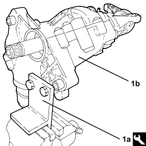
Applies to: engines: 3.2 JTS; all production periods
1. Undo the bolts (1a) fixing the spacer (1b) to the rear drive idler casing.
2. Cut the sealant using the tool.
Tool | Description | Function | Validity |
|---|---|---|---|
1870718000 | Blade | Cut sealant |
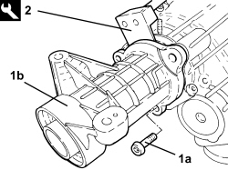
Applies to: engines: 3.2 JTS; all production periods
1. Remove the support (1a) complete with intermediate shaft (1b).
- Remove the intermediate shaft oil seals from the rear drive idler casing and from the spacer.
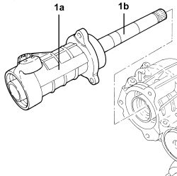
Applies to: engines: 3.2 JTS; all production periods
1. Remove the cover from the rear drive idler casing (which destroys it in the process).
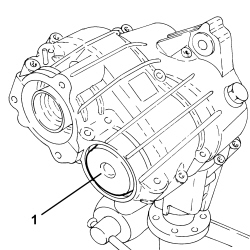
Applies to: engines: 3.2 JTS; all production periods
1. Position the reaction tool on the crown wheel and pinion main shaft.
Tool | Description | Function | Validity |
|---|---|---|---|
2000007200 | Reaction spanner | Locking rear drive idler casing main shaft | 3.2 JTS |
2. Using the tool, undo the ring nut fixing the crown wheel and pinion layshaft.
Tool | Description | Function | Validity |
|---|---|---|---|
2000008800 | Adaptor | Loosen the rear drive idler casing layshaft ring nut | 3.2 JTS |

Applies to: engines: 3.2 JTS; all production periods
1. Undo the bolts (1a) fixing the lower cover (1b) and remove it from the rear drive idler casing.
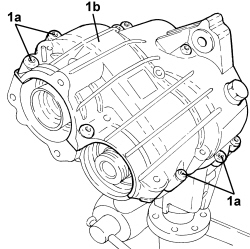
Applies to: engines: 3.2 JTS; all production periods
1. Remove the seals for the crown wheel and pinion main shaft.
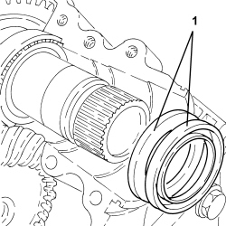
Applies to: engines: 3.2 JTS; all production periods
1. Remove the crown wheel and pinion main and layshafts.
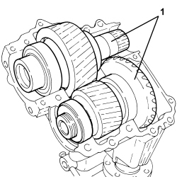
Applies to: engines: 3.2 JTS; all production periods
- Remove the rear drive idler casing from the vice.
1. Fit the tool on the idler flange and place it in the vice.
Tool | Description | Function | Validity |
|---|---|---|---|
2000007000 | Reaction spanner | Locking rear transmission idler flange | 3.2 JTS |
2. Undo the nut fixing the idler flange to the pinion.
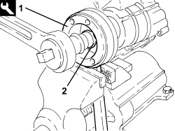
Applies to: engines: 3.2 JTS; all production periods
- Undo the fixing bolts and remove the rear drive idler casing from the reaction spanner used previously.
1. On the press, use the rear drive idler casing support tool (1a) to remove the pinion (1b) and the flange (1c).
Tool | Description | Function | Validity |
|---|---|---|---|
2000010000 | Mount | Rear drive idler casing support | 3.2 JTS |
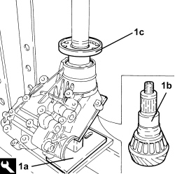
Applies to: engines: 3.2 JTS; all production periods
1. Remove the rear oil seal (1a) and the inner race (1b) for the pinion rear bearing.
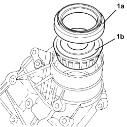
Applies to: engines: 3.2 JTS; all production periods
- Remove the spacer (which can be distorted) from the pinion.
- Remove the residues of sealant from the casing-rear drive idler casing cover and spacer matching surfaces.
Applies to: engines: 3.2 JTS; all production periods
Refitting
Removing- Fit a new spacer (which can be distorted) on the pinion.
- Refit the inner race for the pinion rear bearing.
1. Using the tool (1a) fit the rear oil seal (1b) in its housing on the rear drive idler casing.
Tool | Description | Function | Validity |
|---|---|---|---|
2000006500 | Fitting tool | Fitting rear drive idler casing rear oil seal | 3.2 JTS |
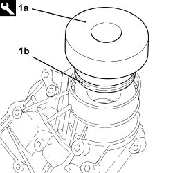
Applies to: engines: 3.2 JTS; all production periods
1. Place the idler flange in its housing.
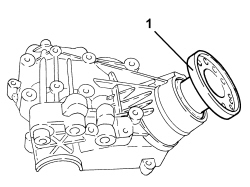
Applies to: engines: 3.2 JTS; all production periods
- Place the pinion, complete with new spacer (which can be distorted), in its housing.
1. Fit the tool on the idler flange.
Tool | Description | Function | Validity |
|---|---|---|---|
2000007000 | Reaction spanner | Locking rear transmission idler flange | 3.2 JTS |
2. Using the special tool (2a), tighten the nut (2b) fixing the flange to the pinion until the recommended rolling torque is reached 2.2 - 2.5 Nm.
- Apply LOCTITE 2701 to the thread of the nut.
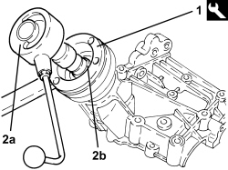
Applies to: engines: 3.2 JTS; all production periods
- Fit the tool on the rear drive idler casing and place it in the vice.
Tool | Description | Function | Validity |
|---|---|---|---|
2000010200 | Mount | Rear drive idler casing support | 3.2 JTS |
- Place the crown wheel and pinion main and layshafts in position.
- Apply a bead of LOCTITE 5910 sealant to the cover - rear drive idler casing matching surfaces.
- Place the cover in position and secure it tightening the bolts to the recommended torque.
Component | Fastening | dia | Value (daNm) | Validity |
|---|---|---|---|---|
Rear drive idler casing cover | Bolt | M8 | 2.8 | 3.2 JTS |
Component | Fastening | dia | Value (daNm) | Validity |
|---|---|---|---|---|
Rear drive idler casing cover | Bolt | M10 | 5.3 | 3.2 JTS |
- Apply LOCTITE 2701 to the thread of the bolts.
1. Using the tool (1a), fit the two new oil seals (1b) on the crown wheel and pinion main shaft, gearbox side.
Tool | Description | Function | Validity |
|---|---|---|---|
2000006400 | Fitting tool | Fitting rear drive idler casing cylindrical gear pair main shaft oil sealing rings | 3.2 JTS |
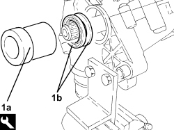
Applies to: engines: 3.2 JTS; all production periods
1. Position the reaction tool on the crown wheel and pinion main shaft.
Tool | Description | Function | Validity |
|---|---|---|---|
2000007200 | Reaction spanner | Locking rear drive idler casing main shaft | 3.2 JTS |
2. Using the tool, tighten the ring nut fixing the crown wheel and pinion layshaft to the recommended torque.
Tool | Description | Function | Validity |
|---|---|---|---|
2000008800 | Adaptor | Loosen the rear drive idler casing layshaft ring nut | 3.2 JTS |
Component | Fastening | dia | Value (daNm) | Validity |
|---|---|---|---|---|
Rear drive idler casing layshaft ring nut | Nut | M35 | 25 | 3.2 JTS |
- Apply LOCTITE 2701 to the thread of the ring nut.
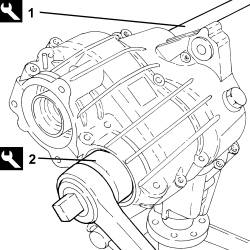
Applies to: engines: 3.2 JTS; all production periods
- Press fit the cover of the ring nut tightened previously on the rear drive idler casing.
1. Using the tool, fit the new oil seal inside the main shaft
Tool | Description | Function | Validity |
|---|---|---|---|
2000006600 | Fitting tool | Fitting oil seal inside rear drive idler casing main shaft | 3.2 JTS |
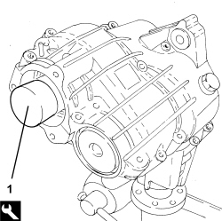
Applies to: engines: 3.2 JTS; all production periods
1. Using the tool (1a) fit the new oil seal (1b) on the intermediate shaft support.
Tool | Description | Function | Validity |
|---|---|---|---|
2000006700 | Fitting tool | Fitting oil seal on rear drive idler casing intermediate shaft support | 3.2 JTS |
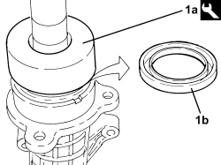
Applies to: engines: 3.2 JTS; all production periods
- Apply a bead of LOCTITE 5910 sealant to the intermediate shaft support - rear drive idler casing matching surfaces.
- Place the support complete with intermediate shaft in position and secure it to the rear drive idler casing tightening the bolts to the recommended torque.
Component | Fastening | dia | Value (daNm) | Validity |
|---|---|---|---|---|
Rear drive idler casing intermediate shaft support | Bolt | M10 | 5.3 | 3.2 JTS |
- Undo the bolts and remove the rear drive idler casing from the support tool.